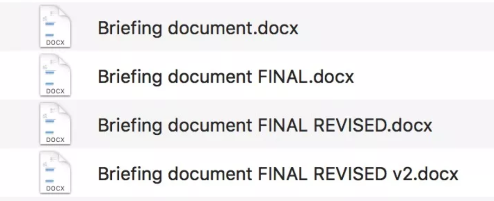
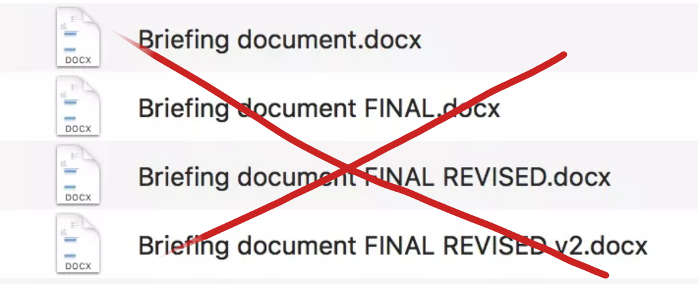
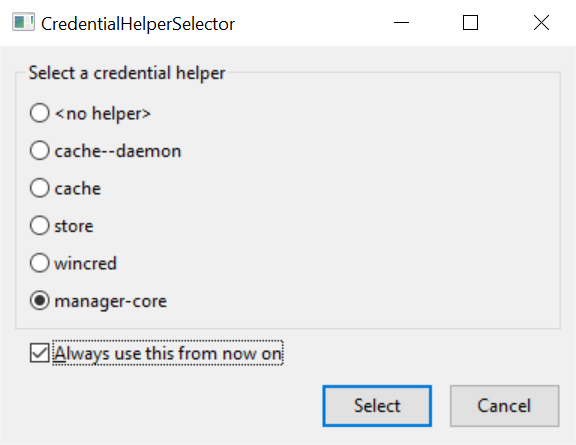
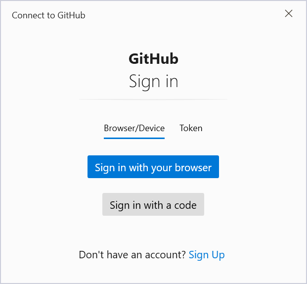
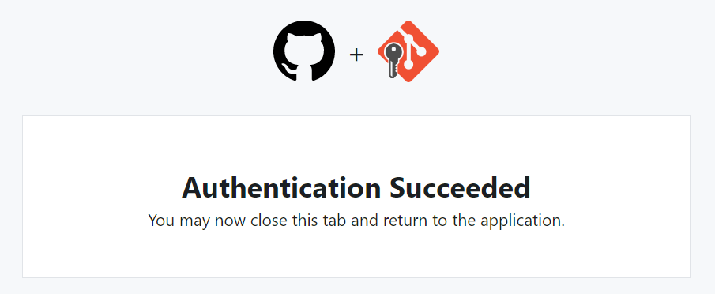

Git workshop
Aj Ty v IT
Tibor Stanko
13.09.22
1 Úvod
O mne
- Tibor Stanko, 31 rokov
- od 2020 dátový inžinier v Zurich Insurance, Bratislava 🇸🇰
- predtým 6 rokov v akademickej sfére vo 🇫🇷 (PhD, postdoc)
- rád automatizujem nudné úlohy s pomocou Pythonu 🐍
- nie som Git guru, no Git používam denne už viac ako 7 rokov
- moje voľnočasové aktivity: 👨👩👧👦🚲⛰️🎸🎹🍺
Obsah tohto workshopu
2 Git a Github
Čo je to Git?
- systém riadenia verzií
- angl. version control system (VCS) alebo source control management (SCM)
- zaznamenáva históriu vývoja projektu
- užitočný pre tímy aj pre jednotlivcov
- nie je len o kóde, dovoľuje ukladať ľubovoľné súbory
Prečo potrebujeme systémy riadenia verzií?
Prečo potrebujeme systémy riadenia verzií?
Čo umožňuje Git?
- ukladať verzie
- prepínať medzi verziami
- obnoviť predošlú verziu
- porovnávať verzie
- vytvárať vetvy
- zlučovať vetvy
Git slovník
| en | sk |
|---|---|
| branch | vetva |
| clone | naklonovanie repozitára |
| commit | záznam |
| commit message | popis záznamu |
| conflict | konflikt medzi verziami |
| conflict resolution | riešenie konfliktov |
| diff | rozdiel medzi verziami |
| merge | zlúčenie vetiev |
| en | sk |
|---|---|
| pull | stiahnutie vzdialených zmien |
| push | odoslanie lokálnych zmien |
| repository | repozitár, úložisko |
| remote | vzdialený repozitár |
| snapshot | snímka |
| staging area | prípravná oblasť (tiež index) |
| status | stav repozitára |
| version | verzia |
Čo je to Github?
- “sociálna sieť pre programátorov”
- Git = systém riadenia verzií
- Github = cloudový portál na ukladanie repozitárov
- používa Git, no nie je jeho súčasťou
- obsahuje funkcionalitu ktorá nie je v Gite
- Issues, Pull requests, Actions, …
- podobné služby: Gitlab, Bitbucket, Azure DevOps, a iné
3 Základy Gitu
Krok 0: Pracujeme s terminálom
- Aby sme pochopili ako Git funguje, budeme na začiatku spúšťať Git cez terminál
- Neskôr si ukážeme aj použitie Gitu priamo v IDE (napr. vo VS Code)
- Vo Windowse odporúčam Windows Terminal s PowerShell (built-in) alebo Nushell
- Základné príkazy na navigáciu medzi adresármi v termináli:
pwd— vypíš aktuálny adresárcd folder— zmeň aktuálny adresár nafolder
Krok 1: Inštalácia Gitu
- Vo Windowse existuje viacero spôsobov ako nainštalovať Git, napr.
- cez klasický inštalátor
- cez scoop (odporúčam) — v PowerShell spustite nasledovné príkazy:
Set-ExecutionPolicy RemoteSigned -Scope CurrentUser
irm get.scoop.sh | iex # inštalácia scoopu
scoop install git # inštalácia gitu- Inštrukcie pre macOS alebo Linux sú na oficiálnej stránke v angličtine aj v češtine.
Krok 2: Nastavenie Gitu
- Skontrolujme či je Git správne nainštalovaný:
- Predtým ako začneme pracovať s Gitom, je potrebné nastaviť si meno a email cez príkaz
git config. Tieto údaje bude Git používať na priradenie autora k verzii.
git config --global user.name "Tibor Stanko"
git config --global user.email "tibor.stanko@zurich.com"- Predvolenú vetvu si nastavíme na
main(o vetvách si povieme viac neskôr)
Krok 3: Vytvorenie Git repozitára
- Prepneme sa do adresára z ktorého chceme spraviť repozitár:
- Príkaz
git initslúži na vytvorenie Git repozitára v aktuálnom adresári:
- Po spustení príkazu Git vypíše:
Krok 3: Vytvorenie Git repozitára
- Stav repozitára môžeme skontrolovať cez
git status:
- Takto vyzerá stav prázdneho Git repozitáru (žiadne súbory ani uložené verzie):
Krok 4: Uloženie verzie
Uloženie verzie prebieha v dvoch krokoch.
- Cez
git addoznačíme zmeny ktoré majú byť pridané do novej verzie:
- Cez
git commitvytvoríme záznam o novej verzii:
Krok 4: Uloženie verzie
- Popis záznamu (commit message) je väčšinou krátka jednoriadková správa ktorá sa špecifikuje cez argument
-m "commit message" - Ak chceme napísať dlhší popis, argument
-mvynecháme.git commitvtedy otvorí textový editor v ktorom popis napíšeme. - V Gite na Windowse je na písanie commit message predvolený editor
vim, ktorý beží priamo v termináli. Ak nemáte skúsenosti s používaním vimu, môžete si editor zmeniť napr. nanotepad:
Krok 4: Uloženie verzie
Neflákajte písanie commit messages!

Krok 5: Kontrola stavu repozitára
- Aktuálny stav repozitára môžeme skontrolovať cez
git status:
- Cez príkaz
git logsa môžeme presvedčiť o tom že záznam (commit) bol vytvorený:
git diff
add a section talking about git diff and its usage
Úlohy (1)
- Vytvor si na svojom počítači prázdny adresár
zoo - Sprav z adresára
zooGit repozitár - Vytvor v repozitári súbor
test.txts ľubovoľným obsahom - Pridaj
test.txtdo ďalšej verzie a ulož ju - Skontroluj novú verziu cez
git log
Tip: nezabudni počas práce používať git status na zistenie aktuálneho stavu repozitára.
4 Vetvy (branches)
Čo je to vetva (branch) ?
Vetvy slúžia na vybočenie z hlavnej línie a pokračovanie v práci bez zásahu do nej
Vetvenie je silnou stránkou Gitu — prepínanie medzi vetvami je rýchle, čo umožňuje časté vytváranie nových vetiev
Doteraz sme pracovali na vetve
main, ktorú automaticky vytvorilgit initZoznam vetiev si môžeme pozrieť cez príkaz
git branch:
V Gite je prednastavená hlavná vetva master. Tento názov sa v posledných rokoch stal kontroverzným a postupne sa prestáva používať. Preto sme pri nastavovaní Gitu zmenili init.defaultBranch na main.
Na čo sú dobré vetvy?
- Vetvy umožňujú efektívne pracovať paralelne na viacerých častiach projektu
- Príkladom je situácia keď vytvárame novú funkcionalitu (vetva A), a vyskytne sa bug ktorý musí byť hneď opravený (vetva B)
- Vďaka Gitu môže práca na týchto dvoch vetvách prebiehať nezávisle
rewrite/improve second bullet
Vytvorenie vetvy (branch)
- Na vytvorenie novej vetvy s názvom
frenchzavoláme
- Ak sa chceme prepnúť na novú vetvu:
- Tieto dve operácie sa veľmi často robia spolu, preto existuje skratka:
Zlučovanie vetiev (merge)
- Ak chceme pridať zmeny spravené na vetve
slovakdo hlavnej vetvymain, prepneme sa najprv na hlavnú vetvu:
- Na zlučovanie vetiev použijeme príkaz
git merge:
Zlučovanie vetiev (merge)
Auto-merge
- Ak je to možné, Git automaticky zlúči zmeny z oboch vetiev. V takom prípade uvidíme nasledovný výstup:
Zlučovanie vetiev (merge)
Fast-forward
- V prípade že zlučovaná vetva je priamym potomkom cieľovej vetvy, Git urobí tzv. fast-forward:
Zlučovanie vetiev (merge)
Riešenie konfliktov
- Ak automatické zlúčenie zlyhá, Git nám vo výstupe nahlási merge conflict. V takomto prípade musia byť zmeny z oboch vetiev zlúčené manuálne.
>> git merge french
Auto-merging hello.py
CONFLICT (content): Merge conflict in hello.py
Automatic merge failed; fix conflicts and then commit the result.- Po manuálnom zlúčení je potrebné pridať zmenené súbory do novej verzie:
Vymazanie vetvy (delete)
- Ak po zlúčení vetvu už nepotrebujeme, môžeme ju vymazať cez
git branch --delete, skrátenegit branch -d.
Po vymazaní je vetva odstránená z histórie a nie je možné ju obnoviť.
Príklad git log histórie
add mermaid diagram for this git log output
Úlohy (2)
- Vo svojom lokálnom repozitári sa prepni na novú vetvu
animals - Vytvor v repozitári nový súbor
zoo.txts nasledovným obsahom:
- Ulož novú verziu ktorá bude obsahovať
zoo.txt - Zlúč zmeny spravené na vetve
animalsdo vetvymaina vymaž vetvuanimals - Na novej vetve
tigerzmeň riadoklevnatigera ulož novú verziu - Prepni sa na vetvu
main, oprav riadokzirafanažirafaa ulož novú verziu - Zlúč zmeny z vetvy
tigers vetvoumain
5 Vzdialené repozitáre (remotes)
Čo je to vzdialený repozitár (remote)?
Doteraz sme pracovali s lokálnym Git repozitárom ktorý je uložený na našom počítači
Vzdialený repozitár (remote) je uložený na Internete — presnejšie, na webovom serveri
napr. github.com, firemný server, univerzitný server, …
- Existujú dva typy remote repozitárov:
- verejný (public) repozitár je zdieľaný so všetkými používateľmi s prístupom na server
- súkromný (private) repozitár je zdieľaný iba s vybranými používateľmi
Na čo slúžia vzdialené repozitáre?
- Zálohovanie kódu
- Zdieľanie kódu
- Synchronizácia kódu v tíme
Vytvorenie repozitára na Githube — github.com/new
Vytvorenie repozitára na Githube — github.com/new
←
Vytvorenie repozitára na Githube — github.com/new
←
Vytvorenie repozitára na Githube — github.com/new
←
Vytvorenie repozitára na Githube — github.com/new
←
Nastavenie remote v lokálnom repozitári
- Na nastavenie vzdialeného repozitára použijeme príkaz
git remote add <name> <url>:
namebude Git používať ako meno vzdialeného repozitára na adreseurl. Meno môže byť ľubovoľné; bežne sa stretneme s menomorigin.- Lokálny repozitár môže mať priradený aj viac ako jeden remote.
Poslanie lokálnej kópie na remote
- Príkaz
git push <remote> <branch>“pretlačí” lokálne zmeny z vetvybranchdo vzdialeného repozitáraremote:
- Pri prvom zavolaní
git pushje potrebné pridať argument-u:
-ualebo--set-upstreamnastaví predvolenú remote vetvu (origin/main) pre aktuálnu lokálnu vetvu (main)ak remote vetva
origin/mainneexistuje,git pushju automaticky vytvorí
Príklad výstupu z git push
- Výstup:
Odbočka: prihlásenie do Githubu
- Aby mohol Git posielať dáta na Github, je potrebná autentifikácia
- Najjednoduchší spôsob na správu prihlasovacích udajov: Git Credential Manager
(je súčasťou Git for Windows) - Konfigurácia sa začne automaticky po prvom spustení
git push



Zoznam vetiev
git branch -avypíše zoznam všetkých vetiev, lokálnych aj vzdialených-aje skratka pre--all
- Výstup —
*označuje aktuálnu vetvu:
Konflikt: remote zmeny neexistujú lokálne
To https://github.com/bbrrck/zoo.git
! [rejected] main -> main (fetch first)
error: failed to push some refs to 'https://github.com/bbrrck/zoo.git'
hint: Updates were rejected because the remote contains work that you do
hint: not have locally. This is usually caused by another repository pushing
hint: to the same ref. You may want to first integrate the remote changes
hint: (e.g., 'git pull ...') before pushing again.
hint: See the 'Note about fast-forwards' in 'git push --help' for details.Stiahnutie remote zmien do lokálnej vetvy
- Pomocou príkazu
git fetchstiahneme zoznam zmien z remote vetvy:
- Zmeny ktoré nie sú súčasťou lokálnej vetvy zlúčime pomocou
git merge:
- Vo väčšine prípadov môžeme jednoducho zavolať príkaz
git pull, ktorý je kombináciougit fetchagit merge:
Klonovanie existujúceho remote repozitára
- Existujúci vzdialený repozitár môžeme naklonovať pomocou
git clone:
- Tento príkaz vytvorí kópiu repozitára z
remote_urlv adresárilocal_folder - Príklad:
Úlohy (3)
- Vytvor si na Githube repo s názvom
zoo - Pridaj tento remote do svojho lokálneho repa
- Nahraj lokálnu vetvu
mainna remote - Na Githube pridaj do súboru
zoo.txtza meno každého zvieraťa jeho emoji: 🐼🐘🐯🦒 - Zosynchronizuj lokálne repo s Githubom
- Na Githube pridaj do súboru
zoo.txtnový riadokkrokodíl 🐊a ulož novú verziu - V lokálnom repe pridaj do súboru
zoo.txtnový riadokgorila 🦍a ulož novú verziu - Zosynchronizuj lokálne repo s Githubom a vyrieš vzniknutý merge conflict
6 Pokročilý Git
.gitignore
- špecifikuje ktoré súbory má Git ignorovať
- .gitignore generátor
git <command> --help
git diff
git cat-file -p
git restore
git add --interactive
git log
git stash
git blame
git revert
Príkaz git revert vytvorí novú verziu, a nemení históriu repozitára.
git reset
Príkaz git reset mení históriu repozitára a môže mať za následok stratu kódu alebo údajov.
7 Markdown rýchlokurz
Čo je to Markdown?
- Markdown je jednoduchý značkovací jazyk (ako HTML alebo TeX) ktorý sa používa na tvorbu rôznych typov obsahu: dokumenty, články, slidy, webstránky, …
- Markdown je de facto štandard pre dokumentovanie Git projektov
- Väčšina Github projektov má
README.mdktorý Github automaticky vyrenderuje - Príklady dobre napísaných
READMEsúborov: matiassingers/awesome-readme
Aj tieto slidy boli vytvorené s použitím Markdownu! (pomocou systému Quarto)
# Markdown is Awesome Markdown is very simple and versatile. This is a Markdown paragraph. This is still the same paragraph. ## Formmatting options Bulleted list: - *italic* - **bold** - ***bold and italic*** - ~~strikethrough~~ - [link](https://www.markdownguide.org/) - `code` Numbered list: 1. first item 2. second item 3. last item
Markdown is Awesome
Markdown is very simple and versatile.
This is a Markdown paragraph. This is still the same paragraph.
Formatting options
Bulleted list:
- italic
- bold
- bold and italic
strikethrough- link
code
Numbered list:
- first item
- second item
- last item
### Code blocks
```python
def main():
print("hello!")
if __name__ == "__main__":
main()
```
### Images

### Blockquotes
> It’s worth remembering that it is often the small steps, not the giant leaps, that bring about the most lasting change.

8 Užitočné zdroje
sk
- videokurz od Yablka: Git a Github od základov
- videokurz na kanáli Informatika s Mišom
- predmet Základy softvérového inžinierstva na FEI TUKE
- časť 2: Systémy pre správu verzií
- časť 3: Práca s vetvami v systéme Git
en
- Pro Git, voľne dostupná oficiálna kniha, k dispozícii čiastočne aj v češtine
- git - the simple guide
- Git tutoriály od Atlassianu
- Coursera: Introduction to Git and GitHub
- Missing Semester of CS Education, Lecture 6: Version Control (git)
- Learn how Git works internally with simple diagrams
- Markdown Guide
- Learn Markdown in 5 minutes